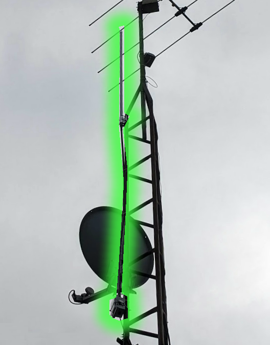

Hardware
- Radio
- Heltec V4
- Firmware role
- MeshCore repeater
- Antenna
- Barracuda 915 MHz, 8 dBi omni
- Mount
- Mast-mounted
A MeshCore repeater in south Mississauga, Ontario.
Heltec V4 with a Barracuda 915 MHz, 8 dBi omnidirectional antenna.

Configured settings; live status is unavailable.
View Oak Roof's profilePublic radio locations and incoming public chat received in the GTA.
View map & messagesLook up a full MeshCore public key to find an opt-in profile, avatar and social links. Create a profile submission for other apps to use.
Look up a nodeExchange a VDO.Ninja connection offer and answer as small radio messages. Once connected, chat and video travel over the Internet.
Start a connectionConnect your own companion radio with the MeshCore web client, or open Oak Mesh if you already run its local collector.
Choose a client